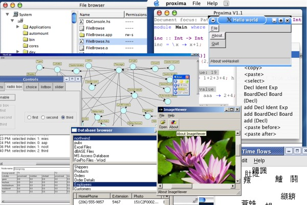

Screenshots
Here are some screenshots taken on various Linux, Windows, and MacOS X systems:
- Samples that are included with wxHaskell.
- Applications that are written in wxHaskell.
Here are some screenshots taken on various Linux, Windows, and MacOS X systems:
